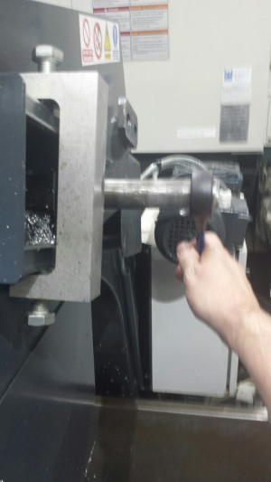

Czwartek w trzecim tygodniu
Jestem już w domu, o ile to można tak nazwać, po pracy i zahaczyłem jeszcze gym dziś bo na starość trzeba sie coś poruszać, żeby zobaczyć jak wnuki kodują :). W zasadzie na teraz nie mam nic ciekawego do napisania, musze sobie jakies notatki robić w ciągu dnia, bo potem zapominam... Może później coś napisze jeszcze. No dobra mamy 21 wiek i w maszynie ręczny taśmociąg - żenada.
